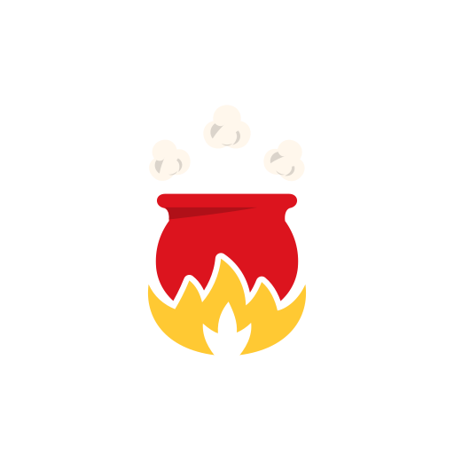

Kettle Forge Studios
Software, made under pressure.
Kernelcade
A 2.5D retro game player for Android. Kernelcade pops classic 2D game worlds apart into layers of depth, with tilt and parallax you can feel. Bring your own game files to play, and enjoy our original games that come built in. Coming to Google Play.
Try a game now: Kernel Drop, our own original game that comes built into Kernelcade, plays free in your browser.
The browser version is 2D; the Android app adds depth.
Experiments and free, open software, from tiny microcontroller systems to whatever pops next.
Kettle Forge Kitchen
The workbench: tools we build to make our games and apps, some of which we'll share.
QR Code Generator: free, offline, no ads. Make QR codes for links, text and Wi-Fi.
ESP32-S3 Flasher: free in-browser tool to install firmware on ESP32-S3 boards, Husk OS or anything else. Plug in, pick a file, flash.